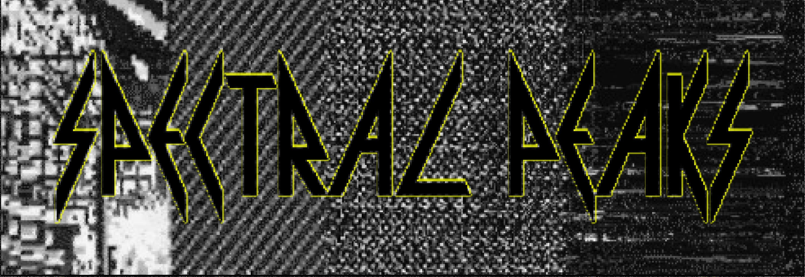

ℂ𝕆𝔻𝔼𝕏 𝔻𝕀𝔾𝕀𝕋𝔸𝕃
From the White Moon of Solaris, the Pinkish Sentient Ocean
If I've said this before
I apologize profusely
but I am not of this world.
Words come up on my brain screen
asking me to buy things
but I know not what they mean.
I am surrounded by seagulls.
Soft white bread erupts from
the pockets of my chinos.
I keep the true name of God
in a locket 'round my neck.
It is never to be opened,
he said.
"Boy, it is never to be
opened."
I am not an astral projection. And,
if when you talk to me you hear arctic
radar beeping, it is only me wrestling
with words I cannot understand. I can
however frame your deficiencies as gifts:
"I love the way you walk sideways on the beach
so as not to scare the birds"
And I recognize that I am not always
there for you, even in my strange way.
That I am in love with you is
impractical knowledge. It manifests
itself only in movies about movies
on my brain screen. I insert subtle,
knowing references to your favorite
flower (Anemone) and your
first pet (Patches). Films you couldn't
possibly by their very nature see,
films I can't even tell you about
without tarnishing their altruism. And
what is love if not altruistic.
"If told of the truth, there would
be no truth left within them."
So I am left to express my love through
not sighing too loudly when getting up
or sitting down lest you think it anger.
And I don't know what the
white birds mean
when they linger outside our window. They
aren't watching us as much as being watched,
telling us something nameless and subtle.
And I turn to you to speak, but what comes
out sounds like a buzzing fridge1. You smile
at me with warm woman cheeks.
We are on the pink sentient ocean, the whole
world is my id, save maybe for the birds,
who retain their original purpose: to be
at one with the sky on overcast days
making muted sounds the clouds think
they surely must have imagined.
1In a soft gurgling voice like the dying droid in Alien.